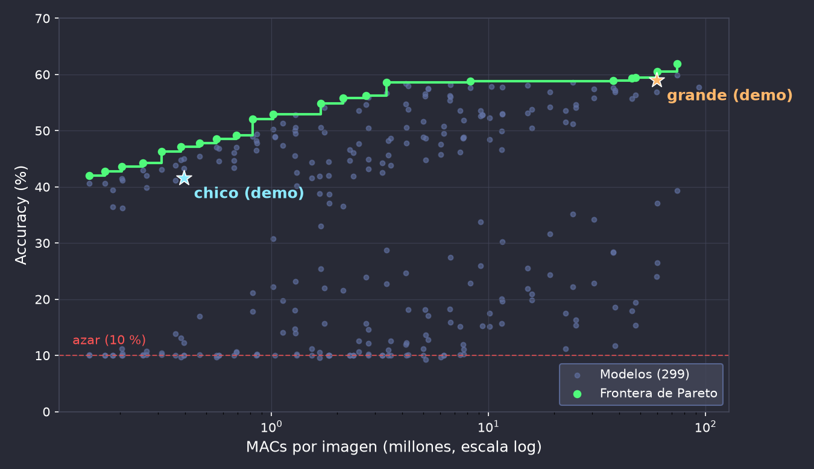
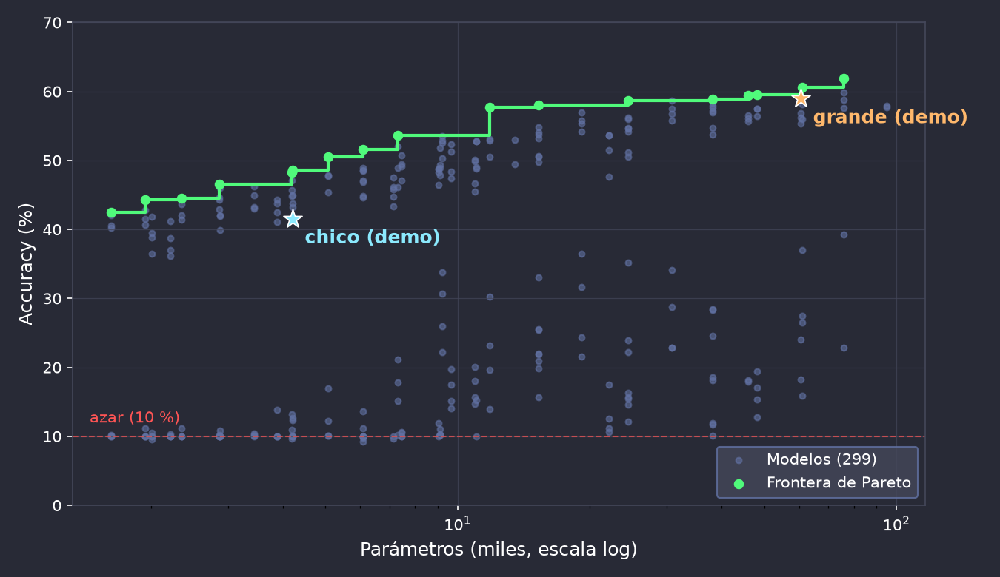

Volvemos al ejemplo del principio, con lo que vimos en las introducciones
| Original | Grande (desplegado) | Chico (desplegado) | |
|---|---|---|---|
| Entrada | 96×96 RGB | 96×96 RGB | 32×32 RGB |
| Convoluciones | Estándar | Estándar | Depthwise separable |
| Poda + reentrenamiento | — | 20 % | 50 % |
| Formato numérico | FP32 | INT8 | INT8 |
| Parámetros | 95 k | 61 k | 4.2 k |
| MACs por imagen | 93 M | 60 M | 0.39 M |
| Tamaño | 371 KB | 68 KB | 15 KB |
| Cambio | Qué reduce | Lo vemos en |
|---|---|---|
| Entrada de 96×96 a 32×32 | 9× menos píxeles → menos MACs en cada convolución | Diseño del sistema, NAS |
| Conv estándar → depthwise separable | Parámetros y MACs por capa | Factorización |
| Poda estructurada + reentrenamiento | Filtros completos (canales) | Pruning |
| FP32 → INT8 | 4× menos memoria, aritmética entera | Cuantización |
| Runtime optimizado para la placa | Tiempo de ejecución, sin cambiar el modelo | Frameworks y despliegue |
MACs
~150× menos
60 M → 0.39 M
Tiempo (misma placa)
~100–125× menos
ESP32-CAM y ESP32-S3
Contar operaciones es una buena primera aproximación, pero el tiempo real también depende de la memoria, de cómo se mueven los datos y de qué instrucciones usa la plataforma.
El mismo modelo, el mismo runtime (ESP-DL), dos placas:
| Modelo | ESP32-CAM | ESP32-S3 | Diferencia |
|---|---|---|---|
| Grande | 9.4 s | 619 ms | ~15× |
| Chico | 75 ms | 6.4 ms | ~12× |
Las dos corren a 240 MHz, pero el ESP32-S3 tiene instrucciones vectoriales (SIMD) que hacen varias multiplicaciones-acumulaciones por ciclo.
El mismo modelo grande, la misma placa (ESP32-S3), distintos runtimes:
| Runtime | Tiempo por imagen | vs. ESP-DL |
|---|---|---|
| ExecuTorch | 56.6 s | ~91× |
| onnx2c | 7.0 s | ~11× |
| TFLite Micro | 3.5 s | ~6× |
| TFLite Micro + ESP-NN | 0.80 s | ~1.3× |
| ESP-DL | 0.62 s | 1× |
| Modelo | Accuracy | Tiempo (ESP32-S3) |
|---|---|---|
| Original (FP32) | 58 % | — |
| Grande | 59 % | 619 ms |
| Chico | 42 % | 6.4 ms |


Cada punto es un modelo: la misma red de partida, con distintas combinaciones de técnicas de compresión.
Cada punto es un modelo: la misma red de partida, con distintas combinaciones de técnicas de compresión.
| Modelo | Accuracy | MACs | Tamaño | Tiempo (ESP32-CAM) |
|---|---|---|---|---|
| A | 61.9 % | 74 M | pendiente | pendiente |
| B (grande) | 59.0 % | 60 M | 68 KB | 9.4 s |
| C | 58.8 % | 8.2 M | pendiente | pendiente |
| D | 56.6 % | 5.1 M | 54 KB | 658 ms |
| E | 58.6 % | 3.4 M | pendiente | pendiente |
| F | 47.1 % | 0.38 M | pendiente | pendiente |
| G (chico) | 41.6 % | 0.39 M | 15 KB | 75 ms |
En verde: modelos de la frontera de Pareto. Ningún modelo es "el mejor": depende de qué restricción pese más.
esp32-pipelines): entrenar → podar → cuantizar → compilar → flashear → medir.